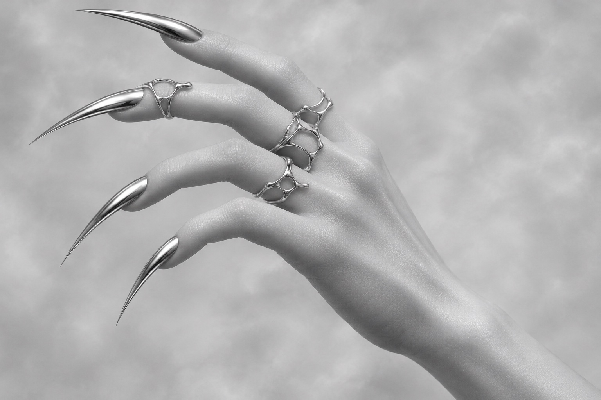

Архитектура
Основные зоны
У каждой зоны своя роль. В носке важно, как они работают вместе.

На фото — ровный блик. Через неделю клиентка присылает снимок с трещиной. Ты уже меняла базу и гель. Что, если стоит присмотреться к самой конструкции?
Записаться ↘Клиентка задела свободным краем ручку двери. Почему трещина появилась в другом месте?
При нагрузке разные зоны ногтя испытывают разное напряжение. Роль точек роста легко упустить, когда тебя устраивает силуэт.
Как связаны остальные зоны?Устойчивость конструкции проявляется в носке.
ТОЧКИ РОСТАДва ногтя сверху выглядят одинаково. Поворачиваешь руку, смотришь с торца — и видишь две разные конструкции.
Архитектура
У каждой зоны своя роль. В носке важно, как они работают вместе.
Профиль
Апекс влияет на профиль ногтя и на то, как конструкция воспринимает нагрузку.
Изгибы
Связь обеих арок с апексом помогает понять, почему при похожем силуэте ногти могут по-разному вести себя в носке.
У одной клиентки трещина снова появилась в той же зоне. У другой деформировался край и скололся угол.
Клиенты разные, а поломки похожи. И в расписании опять появляется переделка.
У трещин, сколов и отслоек бывают разные причины. Что можно упустить, если каждый раз менять только гель?
После поломки хочется добавить геля «для надёжности». Толщину ты увидишь сразу. А стала ли конструкция устойчивее к изгибу?
Рёбра жёсткости помогают ногтю сохранять форму под нагрузкой. Понимание их функции объясняет, как визуально тонкая конструкция может сопротивляться деформации.
Что ты проверишь при следующей поломке?Ты сможешь связать место повреждения с нагрузкой и точнее сформулировать, что стоит проверить в архитектуре работы.
Да. Разберём их взаимосвязь, чтобы оценивать моделирование и по силуэту, и по устойчивости конструкции.
Участие в профессиональном nail-интенсиве стоит 9 €.
Профессиональный интенсив — всего 9 €
Хватит просто надеяться, что в этот раз ногти будут хорошо носиться. Пора понимать, почему они ломаются и что влияет на их прочность.